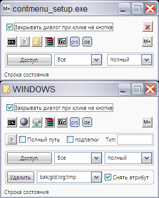

contmenu
Назначение
Некоторые операции с файлами и папками.

Добавляет некоторые команды для контекстного меню файлов и каталога. При вызове пункта "Управление файлом" или "Управление каталогом" открывается окно с кнопками для обработки текущего объекта, например - получить список файлов, перейти в ассоциированный каталог программы и другие.
При установки необходимо указать пути к программам, которые используются в ком-строке.
Scanner можно скачать отсюда http://steffengerlach.de/freeware/